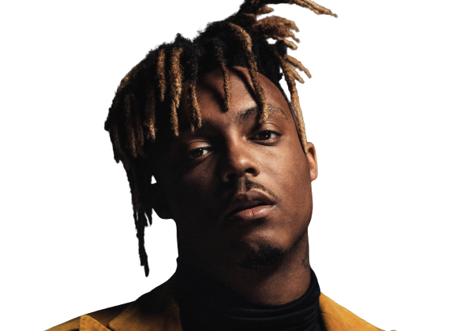
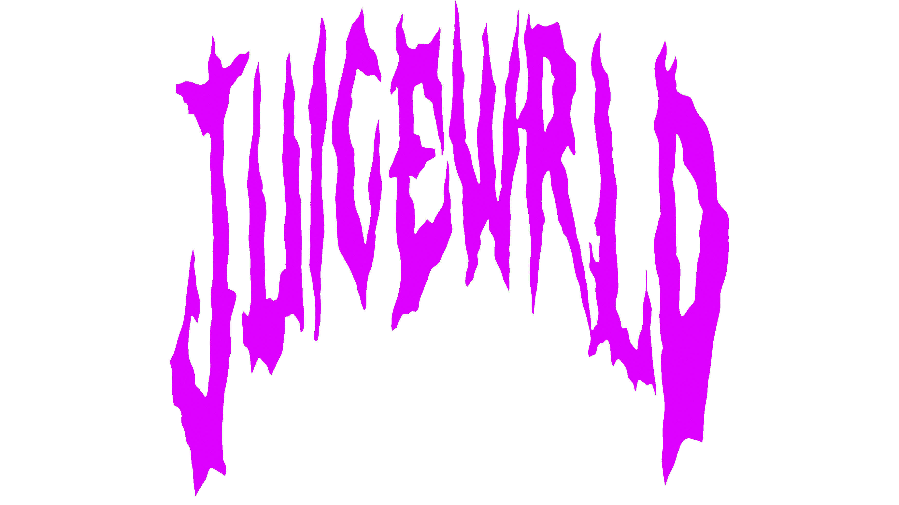
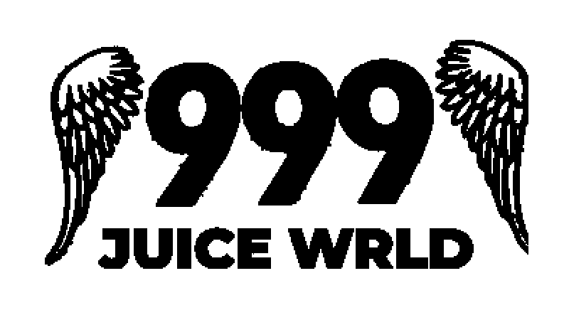
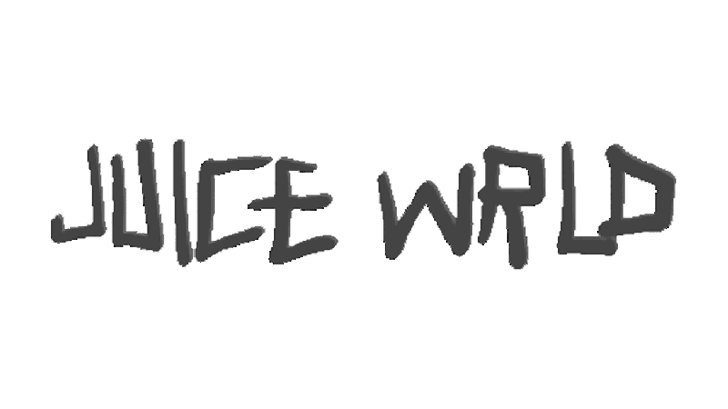
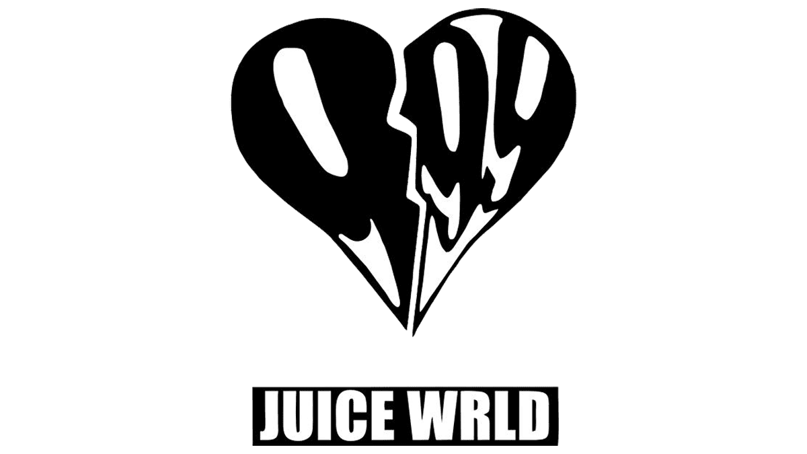

Juice Wrld, whose real name was Jarad Anthony Higgins, was an American rapper, singer, and songwriter. He was born in Chicago, Illinois in 1998 and raised by his single mother. He was a leading figure in the emo rap and SoundCloud rap genres. He rose to fame in 2018 with his hit single Lucid Dreams, which peaked at No.2 on the Billboard Hot 100 chart and No.10 on the official UK chart. His music often dealt with mental health, mortality and drug use.
Jarad Anthony Higgins was born on December 2, 1998, in Chicago, Illinois. He grew up in the South Suburbs spending his childhood in Calumet Park. He then later moved to Homewood, where he attended Homewood-Flossmoor High School and graduated in 2017. His parents divorced when he was three years old, and his father left, leaving his mother to raise him and an older brother as a single parent. Higgins' father died in June 2019. Higgins' mother was very religious and conservative, and did not let him listen to hip hop. He was allowed to listen to rock and pop music, however, being introduced to artists including Billy Idol, Blink-182, Black Sabbath, Fall Out Boy, Megadeth and Panic! at the Disco through video games such as Tony Hawk's Pro Skater and Guitar Hero.
Higgins developed as an artist in his first year of high school. His first track, "Forever", was released on SoundCloud in 2015 under the name JuicetheKidd. Higgins recorded most of his first tracks on a cellphone, uploading them to SoundCloud in his sophomore year. He changed his name from JuicetheKidd, a name inspired by his affection for rapper Tupac Shakur's role in the film Juice, to Juice Wrld because he and his associates believed the change would benefit his career. In an interview with the Atlanta radio station WHTA, Higgins revealed that the latter part of his stage name initially had no meaning but that he came to think it "represents taking over the world". "Too Much Cash", Higgins' first track to be produced by frequent collaborator Nick Mira, was released in 2017. While releasing projects and songs on SoundCloud, Higgins worked in a factory but was dissatisfied with the job; he was fired within two weeks. After joining the internet collective Internet Money, Higgins released his debut full-length EP, 9 9 9, on June 15, 2017, with the song "Lucid Dreams" breaking out and growing his following. Higgins also briefly performed under the name Juice in early 2017.  In mid-2017, he received attention from artists such as Waka Flocka Flame and Southside, as well as fellow Chicago artists G Herbo and Lil Bibby. He subsequently signed with Lil Bibby's co-owned record label, Grade A Productions.
Travis Scott's song "No Bystanders", from his third studio album, Astroworld, featured Higgins and Sheck Wes. The song peaked at number 31 on the Billboard Hot 100. Higgins made his late night television debut performing the song "Lucid Dreams" on Jimmy Kimmel Live! on August 8, 2018. On October 15, the music video for the song "Armed and Dangerous" was released followed by the lead single, "Fine China", from the collaborative mixtape, Wrld on Drugs with Future. Epic Records released the mixtape on October 19. He collaborated with American singer Seezyn for the song "Hide" from the film Spider-Man: Into the Spider-Verse and its soundtrack, both of which were released on December 14, 2018.
In a December 2018 interview with XXL, Ski Mask the Slump God confirmed that he would be releasing a joint mixtape with Higgins titled Evil Twins in 2019; as of 2022, the project has yet to be released. The pair also announced a 2019 tour featuring 30 concerts across North America. Higgins' second studio album, Death Race for Love, was released on March 8, 2019, preceded by the singles "Robbery" and "Hear Me Calling". The album topped the Billboard 200 chart. He then embarked on The Nicki Wrld Tour, alongside Trinidadian-American rapper Nicki Minaj. Higgins released the music video for the song "Fast" from Death Race for Love on April 9.
Higgins' first posthumous appearance was on Eminem's eleventh studio album Music to Be Murdered By on the track "Godzilla", released on January 17, 2020. "Godzilla" peaked at number three on the Hot 100 and number one on the UK Singles Chart. On January 22, an announcement was posted on Higgins' Instagram account by members of his family and the team at Grade A Productions that thanked fans for their adoration for Higgins and confirmed their intention to release music that he was working on at the time of his death.
Higgins was featured on "PTSD", the title track of G Herbo's fourth studio album PTSD, released on February 28. The track also features Lil Uzi Vert and Chance the Rapper. "PTSD" marked the first time that Higgins and Lil Uzi Vert had collaborated on a song since "Wasted". On March 13, a remix of the single "Suicidal", from YNW Melly's debut studio album Melly vs. Melvin, featuring vocals from Higgins, was released. The remix includes a different verse and outro Higgins had recorded. The song reappeared on the Hot 100 and peaked at number 20 following the release of the remix. The single "No Me Ame", a multilingual collaboration among Higgins, Jamaican record producer Rvssian and Puerto Rican rapper Anuel AA, was released on April 17. A computer-generated image depicting Higgins as an angel appears in the background of the song's music video.
On January 15, 2021, Higgins' estate released "Bad Boy" featuring Young Thug, which was accompanied by a Cole Bennett-directed music video shot entirely before Higgins' death; this marks the final collaboration between the artist and director before the former's death. On March 5, "Life's a Mess II", an alternative version of the track "Life's a Mess" from Legends Never Die, featuring Clever and Post Malone was released. On May 28, Higgins' debut full-length album Goodbye & Good Riddance was re-released to commemorate its third anniversary; the re-release includes two new songs, one titled "734" and the other being a remix of "Lucid Dreams" featuring Lil Uzi Vert. The 2018 single "Armed and Dangerous", which was included on the December 2018 Spotify and Tidal reissue of the album, is excluded from the revised tracklist.
Following the re-release of Goodbye & Good Riddance, another posthumous project titled The Party Never Ends was teased by Higgins' management. On June 11, two tracks featuring Higgins were released; "Antisocial" from Migos' album Culture III, and "Can't Leave You Alone" from Maroon 5's Jordi. On August 20, "Matt Hardy 999", a song featuring Higgins from Trippie Redd's album Trip at Knight, was released. Higgins was also featured on Young Thug's album Punk, which released on October 15. On November 11, Higgins' estate announced that his second posthumous album, Fighting Demons, a tie-in for the documentary film Juice Wrld: Into the Abyss, would be released on December 10. The album was accompanied by three singles: "Already Dead", "Wandered to LA" featuring Justin Bieber, and "Girl of My Dreams" featuring Suga of BTS. The first track was released on November 12, the second on December 3, and the third on December 10. The latter track "Girl of My Dreams", released as a standalone digital release, served as the first promotional single from Fighting Demons (2021) and earned Higgins his first number one on the Billboard Digital Song Sales chart. On December 16, Juice Wrld: Into the Abyss was released on HBO Max as a part of the Music Box series. The film spotlights Higgins' struggles with mental health and substance abuse through the use of archival footage, in addition to interviews with Higgins' friends, family, and associates.
On December 8, 2019, Higgins was aboard a private Gulfstream jet flying from Van Nuys Airport in Los Angeles to Midway International Airport in Chicago. Law enforcement officers were waiting for the jet to arrive, having been notified by federal agents, while the flight was en route, that they suspected there were guns and drugs on the plane. Law enforcement officials later revealed that they found 70 lb (32 kg) of marijuana on the aircraft and said several members of Higgins' management team aboard the flight told them that Higgins had taken "several unknown pills", including allegedly swallowing multiple Percocet pills to hide them while police were on board the plane searching the luggage.
Higgins then began convulsing and seizing, after which two doses of the emergency medication naloxone were administered as an opioid overdose was suspected. Chicago PD were told a man (Higgins) had suffered a medical emergency at around 2:00 local time (8:00 GMT). Higgins was transported to the nearby Advocate Christ Medical Center in Oak Lawn, where he was pronounced dead. The Cook County Medical Examiner's Office initially determined the cause of death as unknown. However, on January 22, 2020, the Cook County Medical Examiner stated that Higgins died as a result of toxic levels of oxycodone and codeine present in his system. Higgins' funeral was held on December 13, 2019, at the Holy Temple Cathedral Church of God in Christ in Harvey, Illinois. Friends and family were in attendance, including collaborators Ski Mask the Slump God and Young Thug.
Juice Wrld’s final words before his untimely demise was at a concert in Melbourne, Australia. He is on record to have said to his fans
“I love y’all more than life itself”
Let's respect his work and listen to some of his awesome work 💕